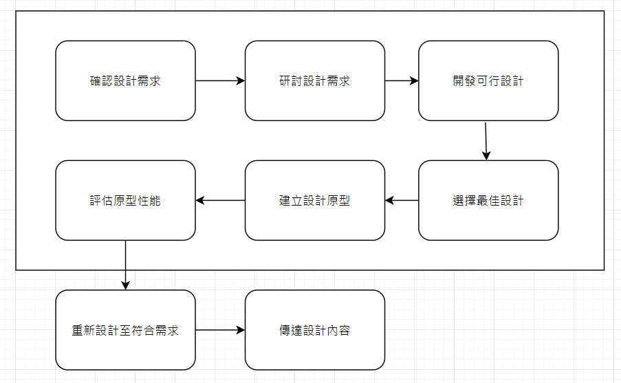

HW3 <<
Previous Next >> CoppeliaSim
W10-W14
從機械設計專業的角度切入機電資整合領域的兩項重點創新目標：
- 設法讓機器看得見, 能夠藉以判讀環境內容, 從容運作
- 讓原本繁雜的流程自動化, 提升操作者的生活品質
2019 Learn Computer Vision Using OpenCV
2020 Machine Learning Concepts with Python and the Jupyter Notebook Environment
2020 Machine Learning and Artificial Intelligence
2020 Learn TensorFlow 2.0
從近端個人維護倉儲進入非同步協同維護倉儲的三種不同方式:
- 進入個人倉儲 cmsimde 執行 python wsgi.py (只有 localhost 可以連線)
- 以區網取得的 IPv6 或 IPv4 網路位址啟動 cmsimde 中的 wsgi.py (區域網路中電腦都可連線)
- 在廣域網路上透過 Python uwsgi 服務在 Ubuntu 中啟動 cmsimde 中的 wsgi.py (任何網際網路上的電腦都可以連線）
Github 倉儲維護技術:
以 SSH 推送改版資料
SSH 與 https://github.com/mdecourse/cmstemplate 引用教學影片
電腦輔助設計實習相關術語 (Terminology) 及理論基礎 (Theoretical Foundation)
電腦
硬體
Hardware Components
Cases, Form Factors, and Power Supplies
Motherboards, Expansion Buses, and Processors
Memory and BIOS
Expansion Cards, Audio, Video, and Storage
Cooling
Networking and Internet
Networking Overview
Networking Hardware
Networking Media
Ethernet Standards
IPv4 and IPv6 Addresses
TCP and UDP Protocols
Introduction to Wireless Networking
Internet Connectivity
Notebooks and Laptops
Notebook Features and Components
Laptop and Notebook Component Replacement
Notebook Power and Physical Security
Printers
Printer Types and Interfaces
Printer Configuration and Installation
Printer Management and Maintenance
Assembly, Management, and Maintenance
Computer Assembly
Wired Network Maintenance
軟體
Windows Operating Systems
Windows Operating System
Installing Windows
Operating System Comparison
Other Operating Systems
Software Utilities
The Command Line
Task Manager
Disk Management
Introduction to Control Panel Utilities
Windows 10 Control Panel Utilities
Networking, Maintenance, and Security
Networking Setup
Preventative Maintenance
Security Settings
Virtualization
Firewall Setup
Data Destruction and Disposal
Wireless Networks
Wired Network Security
Malware
VPN (Open source VPN, https://github.com/trailofbits/algo)
Mobile Systems
Mobile Operating Systems
Mobile Connectivity and Security
Mobile Hardware and Synchronization
Troubleshooting
Application of Troubleshooting Theory
Troubleshooting Wired Networks
Troubleshooting Wireless Networks
Troubleshooting Operating Systems
Troubleshooting Security Issues
介面
GUI (Graphics User Interface)
Command Driven
API (Application Programming Interface)
輔助
應用程式
Solidworks
Solidworks Introduction.pdf
Solidworks Tutorial
Autodesk Inventor
Inventor Tutorial
Siemens NX
Onshape
cad related video
Solvespace
Solvespace Tutorial
Solvespace Learning Guide
Solvespace Tutorial Video
FreeCAD
CoppeliaSim
Pyslvs-UI
Range3
NGSolve
設計
原理
Kinematics
College Physics
College Physics Volume I
College Physics Volume II
College Physics Volume III
Mathematics
Calculus
Calculus Volume I
Calculus Volume II
Calculus Volume III
College Algebra
Algebra and Trigonometry
A First Course in Linear Algebra
Linear Algebra
Basic Solid Mechanics
Introduction to Solid Mechanics
Solid Mechanics
A Concise Introduction to Mechanics of Rigid Bodies
Multibody Mechanics and Visualization
Statics
Vector Analysis
Dynamics
Newton's Laws of Motion
Mechanics of Materials (2020 Mechanics of Materials)
Metals
Plastics
Composite Materials
Design of Machinery
Linkage and Mechanism
Shaft
Gear
Gears V.1 Geometric and Kinematic Design
Gears V.2: Analysis of Load Carrying Capacity and Strength Design
Gears V.3: A Concise History
Cam
Bearing
Linear Slider
Engines
Motors
Robots
Machine Tools
Mechanical Vibrations
Nonlinear Oscillations
Fluid Mechanics
Control
Automatic Control
Modeling
Physical Modeling in Matlab
Modeling and Simulation in Python
Optimization
Numerical Engineering Optimization
Introduction To Lagrangian Dynamics
Introduction to Internal Combustion Engines
Solutions Manual for Introduction to Internal Combustion Engines
Modelling Diesel Combustion
Statistics
實習
實驗
練習
創業
Entrepreneurship
Business Law I
分組電腦輔助設計專案

1) 確認設計需求 - 清楚了解設計動機與目的
2) 研討設計需求 - 研究討論設計需求的內涵, 蒐集相關文獻與參考資料, 經由討論定位設計方向
3) 開發可行設計 - 根據設計方向, 利用電腦輔助設計與分析方法, 建立可行方案
4) 選擇最佳設計 - 利用最佳化分析或品質機能展開流程選擇最佳設計方案
5) 建立設計原型 - 利用電腦輔助設計與製造方法, 建立設計原型
6) 評估原型性能 - 經由討論或與設計需求者溝通, 評估是否接受所完成的設計
7) 重新設計至符合需求 - 若設計已達要求, 則進行下一步, 否則重複上述各相關步驟至符合需求為止
8) 傳達設計內容 - 建立與設計內容相關的各種資料, 準備進行專案報告
Python Data Science 教學影片
References:
/downloads/2016_Design and analysis of the link mechanismfor the flapping wing MAV using flexiblemulti-body dynamic analysis.pdf
HW3 <<
Previous Next >> CoppeliaSim